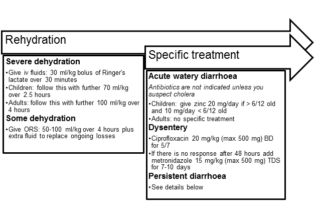
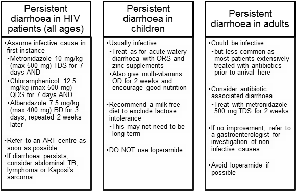

Gastroenteritis
Executive summary
Introduction
Bacterial and viral gastroenteritis causes acute inflammation of the GI mucosa of the middle or lower intestine. It has many causes, can range from mild to severe, and typically manifests with symptoms of vomiting, diarrhoea, and abdominal discomfort. It is primarily an acute, selflimited illness. Immunocompromised patients can develop unremitting or fatal symptoms from gastroenteritis.
Gastroenteritis is commonly due to infectious agents—viruses, bacteria, and parasites. There are four viral agents: rotavirus, norovirus, enteric adenovirus, and astrovirus. Rotavirus is the most common cause of severe diarrhoea in children. Exotoxins produced by some organisms induce hypersecretion or increased peristalsis resulting in diarrhoea or vomiting. Viruses destroy enterocytes of the upper jejuna.
Bacteria such as E. coli and Salmonella penetrate and invade the gastric mucosa and lead to diarrhoea accompanied by fever and faecal leukocytes.
Target User
· Doctors
· Nurses
Target area of use
· Ward
· Outpatient department
· Gate clinic
Key areas of focus/new additions/changes
This guideline addresses the management of gastroenteritis as well as persistent diarrhoea in children, adults and those infected with HIV.
Limitations
We have limited access to diagnostic tests for persistent diarrhoea.
Presenting symptoms and signs
In all age groups, gastroenteritis may present with fever, abrupt onset of nausea and vomiting, abrupt onset of diarrhoea, explosive flatulence, cramping abdominal pain, mucoid stools with or without blood, tenesmus, myalgia, headache, malaise, potential for seizures in children with high fever or electrolyte abnormalities
Any patient complaining of diarrhoea and vomiting should be asked for more details in order to establish:
· how frequent the stools and vomiting are
· how long the illness has gone on for
· the nature of the stools and vomitus
· if there are any risk factors for more serious illness
· recent study abroad
· if there is a potential outbreak in the compound or surrounding area
Examination findings
Examine the patient looking for evidence of:
· Dehydration – see below for classification of severity.
· Malnutrition (in which case they must be managed according to the malnutrition protocol).
· Chronic illness and sepsis.
· Rule out a surgical cause (such as intussusception in a child).
· Auscultate the abdomen in all quadrants for bowel sounds; note hyperactive bowel sounds, absent or hypoactive bowel sounds (common with botulism), and borborygmi.
· Palpate the abdomen for diffuse tenderness, slight distension, masses, rebound tenderness, and spasm.
· Rectal exam: Check for masses, fissures, inflammation, perianal erythema, or stool in ampulla.
· Neurologic exam: Check for dizziness, difficulty swallowing, and other neurologic signs. (Neurologic signs and symptoms indicate botulism and require emergency intervention.)
Severity of dehydration
Children:
· Some dehydration: Two or more of the following signs
o restlessness or irritability
o sunken eyes
o drinks eagerly, thirsty
o skin pinch goes back slowly
· Severe dehydration: Two or more of the following signs:
o lethargy or unconsciousness
o sunken eyes
o unable to drink or drinks poorly
o skin pinch goes back very slowly (≥ 2 s)
Adults:
· Severe dehydration is present in adults with reduced level of consciousness, reduced urine output, clammy extremities, tachycardia, low blood pressure or peripheral cyanosis.
When to refer to doctor in OPD
Refer patients with:
· diarrhoea for more than 2 weeks (persistent or intermittent)
· malnutrition
· known HIV infection
· severe dehydration
· chronic illness
· sepsis
· a surgical abdomen.
Other patients can be managed in gate clinic without further investigation.
Investigations
May not be necessary but for more severe cases consider:
· FBC.
· Stool for M,C&S.
· If there is fever, test for malaria.
· If there is evidence of systemic compromise, send blood for U&Es – children frequently present with severe electrolyte disturbance.
· If there is evidence of chronic illness, counsel and test the patient for HIV.
· Urinalysis: Excludes UTI as cause of nonspecific vomiting.
· Abdominal US to rule out intussusception.
Differential Diagnoses
· Acute viral hepatitis
· Acute appendicitis
· Cholecystitis
· Inflammatory bowel disease
· Pelvic inflammatory disease
· Intussusception
· Bowel obstruction from other causes
Management in Gate clinic
Treat patients with some dehydration with ORS. Give 50-100 ml/kg over 4 hours to replace the existing deficit.
If patient cannot drink the prescribed ORS, the diarrhoea losses are large or they fail to improve with the ORS, then refer to the doctor.
If the patient improves, prescribe further ORS for the rest of the day. Advise them to make up sugar-salt-solution the next day. If the diarrhoea persists after this, tell them to return to the clinic.
Acute watery diarrhoea with or without vomiting
Give zinc supplements to all children for 10-14 days in a dose of 20 mg/day for those aged 6 months and above and 10mg/day for those aged under 6 months.
Antibiotics are not indicated unless the diarrhoea is profuse and cholera is suspected.
Dysentery with or without vomiting
This is most commonly caused by shigella. It should be treated with ciprofloxacin 20 mg/kg up to 500 mg BD for 5 days.
If there is no response after 48 hours, then the possibility of amoebic dysentery should be considered. Give metronidazole 15 mg/kg up to 500 mg TDS for 7-10 days.
Management in OPD or on the ward
See flow chart for quick reference.
Rehydration
All patients with dehydration must be rehydrated.
Treat all patients with severe dehydration with iv fluids. ORS should be started at the same time unless the patient is vomiting. Give a 30 ml/kg bolus of Ringer’s lactate over 30 minutes. Follow this in children with a further 70 ml/kg infusion of Ringer’s lactate over 2.5 hours. Give adults a further 100 ml/kg over the next 4 hours.
Treat patients with some dehydration with ORS. Give 50-100 ml/kg over 4 hours to replace the existing deficit. Add extra fluid by measuring ongoing losses and replacing ml for ml.
Acute watery diarrhoea or dysentery with or without vomiting
Treat as described for Gate clinic above
Persistent diarrhoea and vomiting in patients with HIV
This is most commonly caused by an infection, although other possibilities should be considered. Infectious causes include all the usual enteric bacteria, viruses and protozoa such as cryptosporidium. Abdominal TB and HIV itself can cause diarrhoea, as can infiltrative conditions such as lymphoma and Kaposi’s sarcoma.
Begin by assuming a bacterial or parasitic cause. After sending a stool culture, treat with Metronidazole 10 mg/kg up to 500 mg TDS for 7 days and Chloramphenicol 12.5 mg/kg up to 500 mg QDS for 7 days. High dose septrin can be used as an alternative to Chloramphenicol for patients not on septrin prophylaxis. The dose is 48 mg/kg (max 1920 mg) BD for 2 weeks, followed by 24 mg/kg (max 960 mg) BD for another 3 weeks.
If the diarrhoea has been present for more than 2 weeks, then also add albendazole 7.5 mg/kg up to 400 mg BD for 3 days. Then repeat this treatment after 2 weeks.
Refer the patient to an ART centre to ensure they are assessed and started on treatment. Encourage the patient to eat nutritious meals on a frequent basis.
If diarrhoea persists after this, consider an alternative cause. Is there evidence of abdominal TB, lymphoma or KS?
Refer to a gastroenterologist for further management.
Persistent diarrhoea and vomiting in children
This is most commonly infectious in origin. There are a number of different mechanisms for the persistence:
· the infection is difficult to clear
· there is secondary damage to the intestine such as lactulose intolerance or antibiotic-associated diarrhoea
· intestinal healing is delayed by specific deficiencies or malnutrition
· there are multiple acute infections with different agents mimicking persistent diarrhoea.
Malnutrition may also itself cause chronic diarrhoea which may be associated with allergic enteropathy and small bowel bacterial overgrowth.
Treat as for acute watery diarrhoea, but with extra concern for nutritional status. Give multivitamins for 2 weeks. Advise the carer to avoid giving milk-based products until the diarrhoea has resolved and to feed the child little and often.
If the diarrhoea fails to respond to these measures, do not use loperamide or other anti-diarrhoeal agents. Refer to a paediatrician for further assessment.
Persistent diarrhoea and vomiting in adults
This may also be caused by a persistent pathogen, however, other causes may need to be considered – most patients are likely to have been treated with antibiotics prior to presenting to us.
Consider the possibility of difficult to treat infections and send stools for MC&S prior to further treatment. If the patient has been given many courses of antibiotics, antibiotic-associated diarrhoea may be the cause. This is best treated with a 2 week course of metronidazole (500 mg TDS).
In other cases, refer to a gastroenterologist for further assessment.

Key Issues for Nursing care
· Ensure the patient is receiving the right fluid replacement and is taking everything as prescribed.
· Ensure that the patient or their carer informs you of all episodes of diarrhoea and vomiting and record losses – either by weighing nappies or estimating quantities.
· Send stool samples prior to starting antibiotics wherever possible.
· Ensure meticulous hand washing to decrease transmission.
· If the patient is diapered and/or incontinent, tell the patient or caregiver to adhere strictly to contact precautions.
· Diaper changing areas should be separate from food preparation areas.
· Chlorinebased disinfectants inactivate rotavirus and may prevent disease transmission from contact with environmental surfaces.
References
LaRocque and Pietroni 2017. Approach to the adult with acute diarrhea in resource-limited countries. UpToDate May 2017.
Harris and Pietroni 2017. Approach to the child with acute diarrhea in resource-limited countries. UpToDate Mar 2017.
Moore 2016. Persistent diarrhoea in children in resource-limited countries. UpToDate Dec 2016.
Bonis and Lamont 2017. Approach to the adult with chronic diarrhea in resource-rich settings. UpToDate Jun 2017.
The Gambia HIV treatment manual 2011. Banjul, The Gambia: National Aids Secretariat; 2011.
Centers for Disease Control and Prevention: www.cdc.gov
|
Written by: |
Name: Amie Secka |
Date: 16 July 2018 |
|
Reviewed by: |
Name: Baderinwa Abatan |
Date: 01 August 2018 |
|
Version: |
Change history: |
Review due date: |
|
1.0 |
New document |
|
|
2.0 |
Adapted from previous guideline on diarrhoea |
15 August 2020 |
|
Review Comments (if applicable) |
|
|